AI Trip Manager
AI-assisted trip management for transportation planning and logistics operations, connecting intelligent guidance with practical workflows and day-to-day operational decisions.
I am an AI and Data Science leader specializing in machine learning, predictive analytics, and optimization. I combine hands-on technical expertise with strategic leadership to turn complex data into practical, high-impact business solutions. My experience spans automotive, transportation, logistics, and emergency services. From building production-level predictive and optimization solutions to leading enterprise data science teams, I focus on delivering scalable solutions that improve efficiency, decision-making, and business performance.
Hyundai Motor America
Lead enterprise data science initiatives and oversee the strategy, development, deployment, and governance of 20+ production machine learning models across Hyundai and Genesis. Manage data science teams delivering predictive analytics and intelligent decision systems supporting customer growth, marketing, sales, vehicle quality, connected services, and service retention. Drive AI adoption, model monitoring, and enterprise analytics modernization through cross-functional collaboration.
iRoute 1
Led analytics and AI product development for transportation and logistics optimization. Designed and delivered production solutions for route optimization, real-time ETA prediction, shipment tracking, and intelligent transportation decision-making. Advanced AI-assisted trip management and LLM-enabled feedback capabilities to improve routing efficiency and operational performance.
RunBuggy
Developed production machine learning and optimization solutions for automotive logistics, including order optimization, transporter matching, predictive analytics, and automated document processing. Applied large-scale transportation data and geospatial analytics to improve operational efficiency, reduce manual processing, and support data-driven business decisions.
American Medical Response
Led nationwide forecasting, simulation, and spatial optimization initiatives supporting emergency medical transportation operations. Developed demand forecasting models and resource deployment optimization systems to improve operational planning, service coverage, and cost efficiency. Delivered scalable analytical solutions integrating geospatial data, predictive modeling, and mathematical optimization.
UCLA Extension · Cal Poly · Santa Clara University · Saint Louis University
Academic experience spanning artificial intelligence, machine learning, engineering, and applied research.
Saint Louis University
Saint Louis University
Focus:
Bayesian Inference, Predictive Modeling,
and Intelligent Decision Systems.
Dissertation:
A Forward Collision Warning Risk Assessment
Model Based on Bayesian Inference.
Developed a Bayesian risk prediction model
using naturalistic driving data (100-Car NDS),
incorporating driver distraction to improve
collision-risk assessment and reduce false alarms.
University of Texas at Dallas
University of Texas at Dallas
Completed graduate-level coursework and
applied research projects as part of
doctoral studies.
Strengthened foundations in quantitative
analysis, analytical modeling, and
research methodologies.
Azad University
Azad University
Field:
Geospatial Information Systems
Thesis:
A Context-Aware Spatial Information
System for Drivers' Safety.
Applied geospatial analytics and
context-aware information systems to
support location-based intelligence
and data-driven decision-making.
Azad University
Azad University
Field:
Civil Engineering
Built a foundation in mathematics,
quantitative analysis, engineering
systems, and analytical problem-solving.
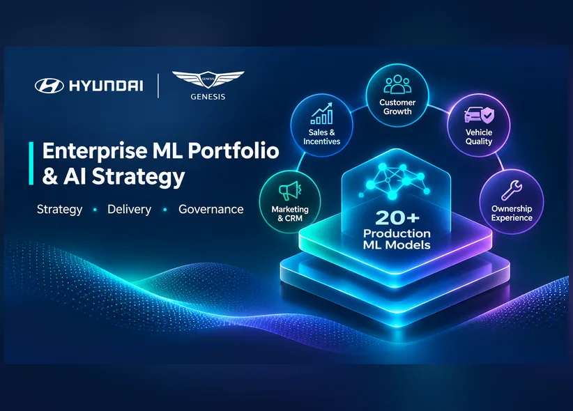
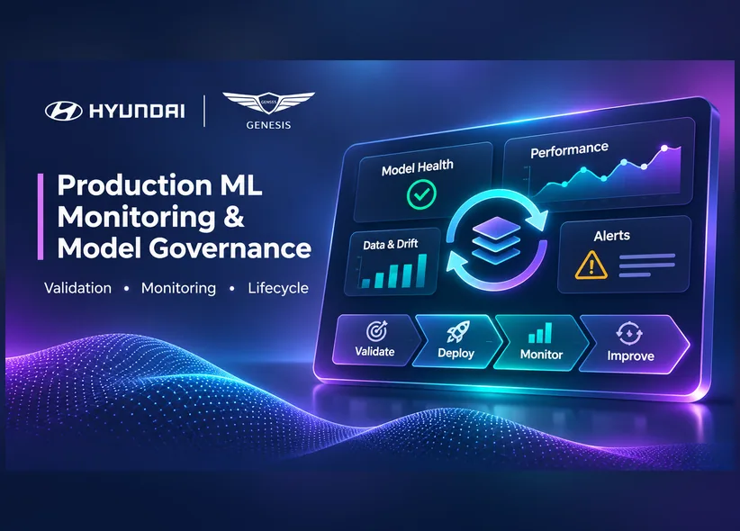
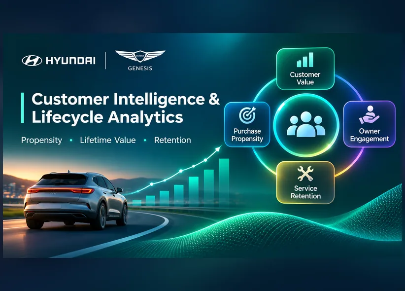
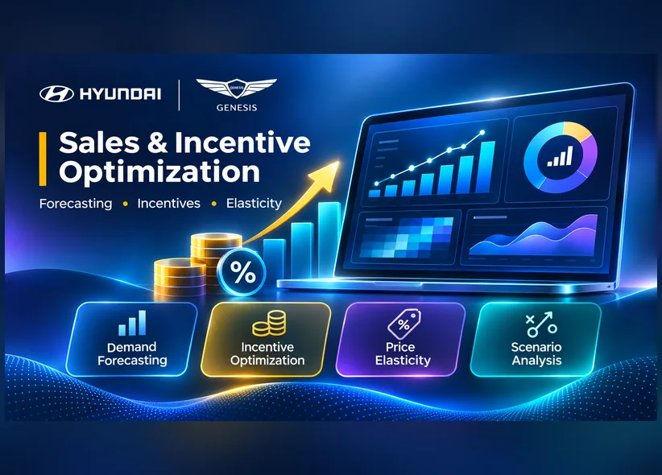
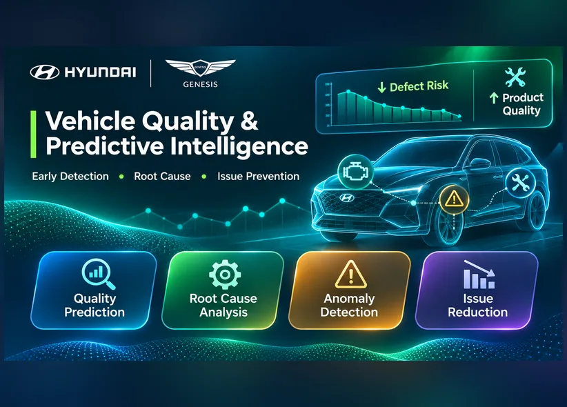
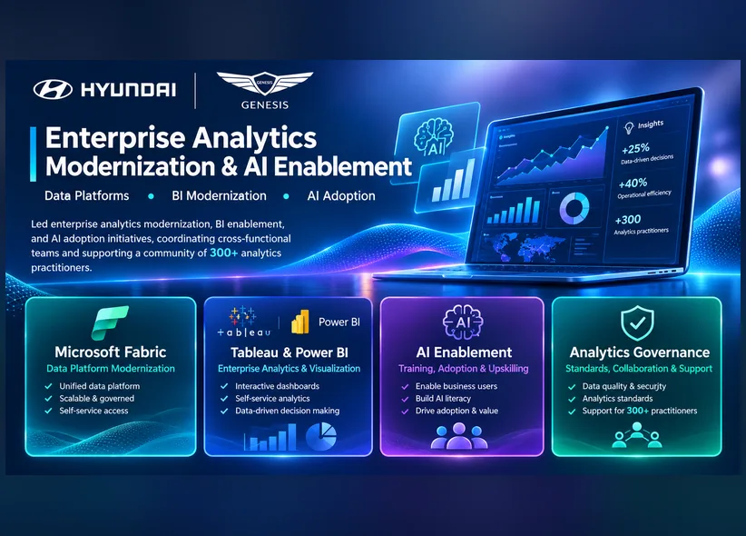
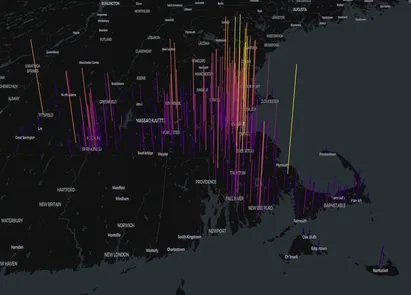
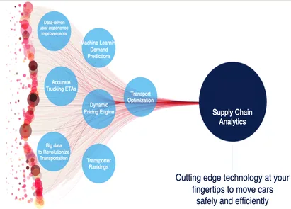
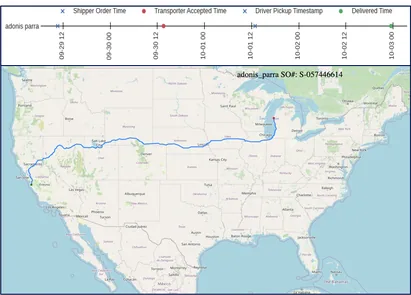
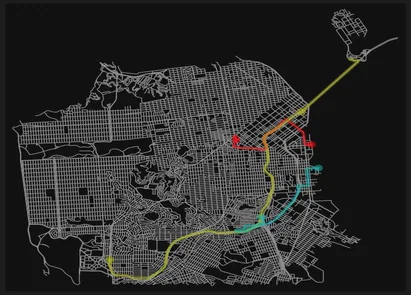
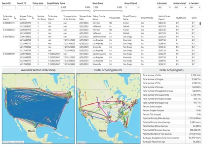
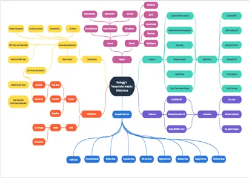
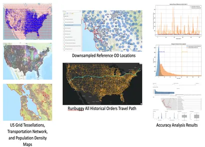
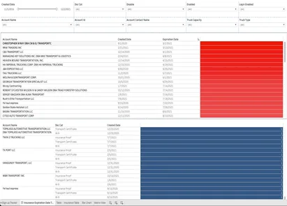
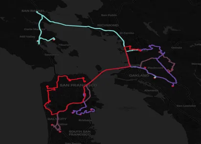
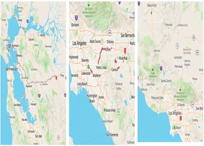
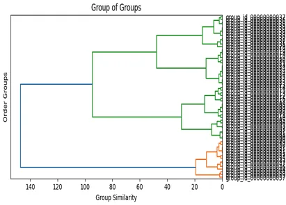
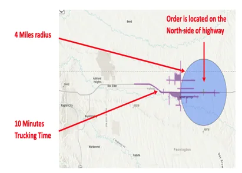
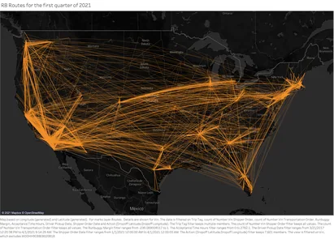
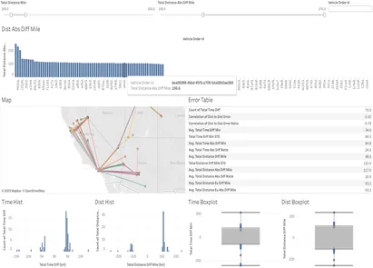
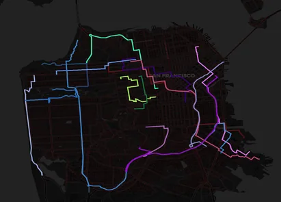
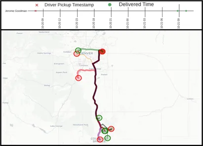
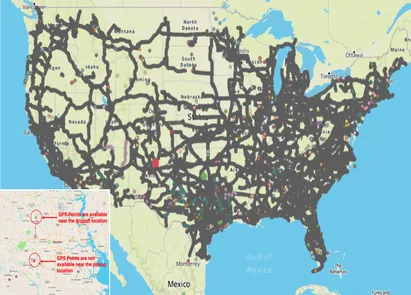
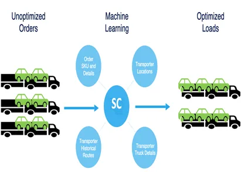
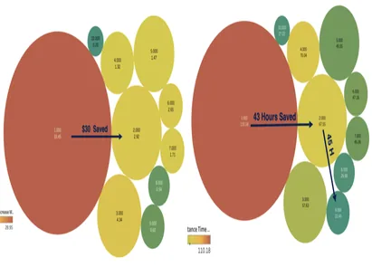
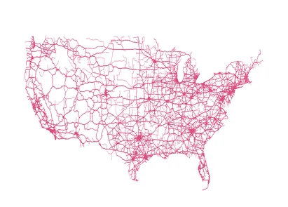
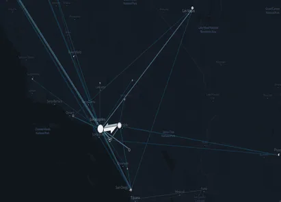
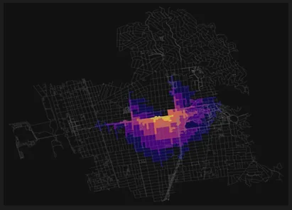
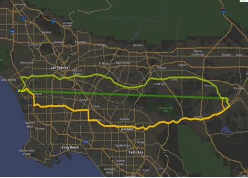
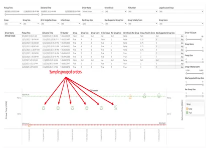
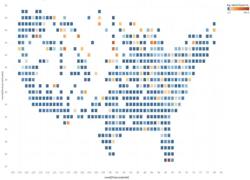
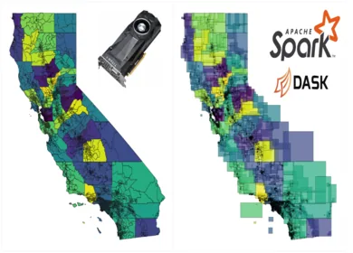
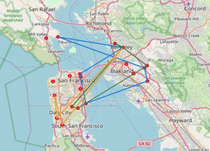
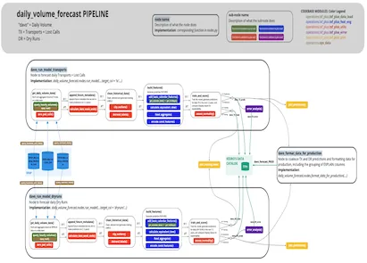
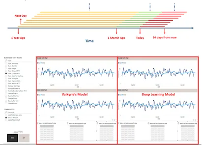
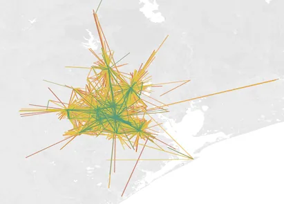
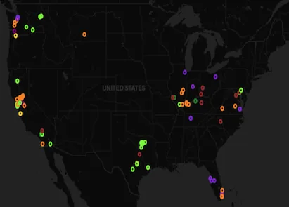
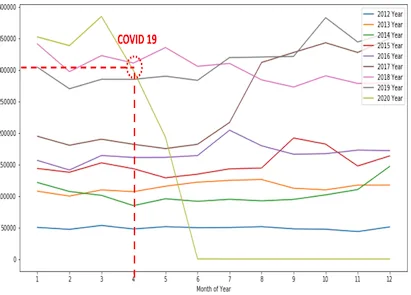
AI-assisted trip management for transportation planning and logistics operations, connecting intelligent guidance with practical workflows and day-to-day operational decisions.
Combines route optimization with natural-language feedback to explore more interactive planning, refinement, and decision support for transportation operations.
Demonstrates estimated arrival times and shipment tracking to improve transportation visibility, coordination, and data-informed decisions across logistics operations.
Spatial optimization approach for selecting ambulance deployment locations and vehicle coverage to support timely emergency response while controlling operational costs.
Computer vision pilot evaluating deep learning methods for detecting field-operation activity and supporting more automated, consistent reporting workflows.
Python-based evaluation, validation, and calibration of travel-time estimates using historical traffic patterns and millions of real-world ambulance GPS trajectory observations.
Simulation-based assessment of vehicle-to-vehicle communication methods using connected-vehicle scenarios, traffic modeling, and Python-based analysis.
Genetic algorithm for tuning collision-warning classifier thresholds, balancing detection sensitivity against false positives in safety-related prediction models.
Explores advanced unsupervised machine learning techniques for identifying traffic-flow patterns and accurately estimating key traffic characteristics from observed real-world roadway data.
Open to connecting about AI, machine learning, data science leadership, and optimization.